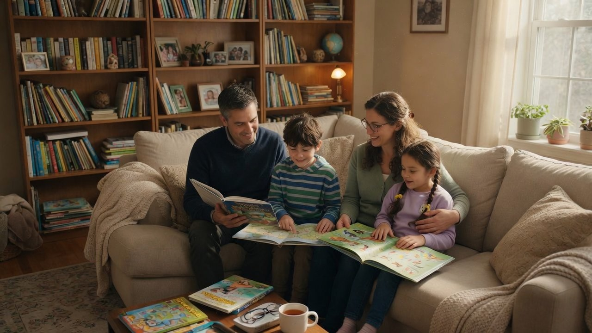

Health Risks
Radon is a leading cause of lung cancer in non-smokers in Canada. Learn why testing Edmonton-area homes matters—and how reducing indoor radon lowers long-term exposure risk.

Why Indoor Radon Matters
Radon is a colorless, odorless, radioactive gas that seeps into buildings from the ground. Health Canada identifies it as the leading cause of lung cancer among non-smokers in Canada.
Because you can’t see, smell, or taste radon, many Alberta families may be exposed for years without knowing. Risk cannot be reduced to zero, but it can be lowered substantially with professional testing and, when needed, mitigation. Request a free quote to get started.
Why Reducing Radon Matters
Understanding the health science behind radon exposure helps explain why testing — and mitigation when levels are elevated — is a practical step for protecting your household.
Leading Cause of Lung Cancer in Non-Smokers
Health Canada estimates that radon causes about 16% of lung cancer deaths in Canada, making it a major and preventable indoor health risk.
Risk Rises With Time and Concentration
There is no known safe level of radon. Lifetime lung cancer risk rises with concentration and years of exposure — including at levels below Health Canada’s 200 Bq/m³ action level, where mitigation is recommended.
Children and Smokers Face Higher Risks
Children are more susceptible because their lungs are still developing. Smokers exposed to radon have a risk of lung cancer that is close to 10 times higher than non-smokers.
Mitigation Can Substantially Lower Exposure
A properly installed radon mitigation system can significantly reduce radon levels, often bringing them far under Health Canada’s 200 Bq/m³ action level and lowering long-term exposure risk.
Official Health Canada Guides
Authoritative Health Canada resources for homeowners — plus a clinician guide for health professionals.
Health Canada — Radon Guide
For homeowners & families
Official federal guidance on radon health risks, testing methods, and reducing exposure in Canadian homes, workplaces, and other buildings.
Read the Health Canada guideRadon: Is it in Your Home?
For health professionals & clinicians
A Health Canada guide written for clinicians. It covers patient risk, testing recommendations, and mitigation guidance for public health practice.
Download clinician PDFConcerned about radon in your home? Get a free testing quote today.
Get Your Free Quote